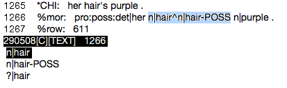

If you have everything set up as outlined in the Setup section, you can start coding syntax. This section outlines the syntax coding process, from acquiring a transcript to cleaning it up for analysis to resubmitting the fully coded transcript in the SVN repository. There are many steps, so you will probably have to refer back to this document fairly often for the first few transcripts.
Use the dump.py tool included in the code repo to generate the CHAT file for the transcript you are working on. This program requires three arguments: –subject, –session, –out. When you’re in your working directory, simply type:
dump.py --subject SUBJ_NUM --session SESS_NUM --out OUT_FILE
replacing SUBJ_NUM and SESS_NUM with the subject and session number you’re working on, and OUT_FILE with a filename following the format SUBJ_NUM.SESS_NUM.cha.
For example, to create a CHAT file for subject 29, session 9, type:
dump.py --subject 29 --session 9 --out 29.09.cha
The file must be prepped before any of the software can be run on it. See the section on Prepping a Transcript for detailed instructions on this step.
Note
The entire Prepping a Transcript section must be completed before proceeding to the next step.
After you remove disfluencies and repetitions, there may be words in the transcript that CLAN does not recognize for whatever reason. To find these words, type:
mor +xl 123.09.cha
This will generate a file called 123.09.ulx.cex. Search 123.09.cha for the words found in 123.09.ulx.cex and take one of the following steps to correct it:
If a word cannot be found in the CLAN lexicon and it doesn’t appear to be a compound word, check to see if it is misspelled. Two resources are the Oxford English Dictionary and the terminal command dic, which searches the CLAN lexicon files on your computer. If the word is misspelled, simply correct the spelling in the transcript.
For help on the dic command, simply type dic into the terminal and press Enter.
If the unrecognized word appears to be a compound word but is written as one word (for example, icecream), see if there is an entry for a compounded form (for example, ice+cream) using the dic command. If there is, replace it with the compounded form. You may need to search for individual components of the word to find a compounded form. For instance, if a transcript contains upsidedown and nothing comes up when you type dic upsidedown, try typing dic down. Alternatively, you can use the -p switch to search for part of a word (for example, dic -p side).
If, however, you have searched for each component and there is no compounded form of the word you’re looking for, you may have to add a new entry to the appropriate lexicon file. See Section 4.5 for information on adding new words to the lexicon.
Numbers are written with a + between each element of the number. A number can be made up of cardinal numbers (one, twenty+two, seventy+three, etc.), ordinal numbers (first, twenty+seventh, ninety+fourth, etc.), fractions (one+half, three+quarters, five+ninths, etc), and the words and, a, and oh, meaning zero (five+and+a+half, eight+oh+eight, one+hundred+and+eighty+first).
See also
Section 6.9 of the Transcription Guide explains the conventions for transcribing numbers.
If CLAN does not recognize a word, you may want to apply either the & or the @ symbol instead of adding it to the lexicon.
If you feel that something should not be counted as a word (for example, “the plane went phwoom past the tower”), place the & symbol in front of the word (the plane went &phwoom past the tower). This symbol will prevent the attached word from being included in word counts and morphosyntactic analysis.
If, however, you feel that the unrecognized word is being used as a word, but is not common enough to justify adding it to the CLAN lexicon (for example, “did you frump?” where “frump” means “fart”), place the @ symbol at the end of the word (did you frump@ ?). This symbol will include the attached word in word counts and morphosyntactic analysis, but will assign it the part-of-speech idio.
See also
Section 6.1 of the transcription guide explains when and how to use the & and @ symbols.
If you find a word that is not recognized in the CLAN lexicon and that can not be made to match an entry in the CLAN lexicon (by changing the spelling or by compounding, for instance), you will have to add that word to the lexicon in the SVN repository.
Open the appropriate lex file by typing:
add ldp-filename.cut
where filename is derived from the part of speech for the word you are adding. For simple parts-of-speech, this is just the part-of-speech code. If you are adding a new noun or a new adverb, for instance, type:
add ldp-n.cut
or add ldp-adv.cut
For more specific parts-of-speech that have a colon in the tag (e.g. adv:int or pro:poss:det), it will be the code for the base part-of-speech. For a new adv:int or pro:poss:det, for instance, you would type:
add ldp-adv.cut
or add ldp-pro.cut
For compound words, the filename is made up of two parts: the part-of-speech of the entire compound, and the parts-of-speech of the components, joined together with + signs. For instance, the part-of-speech of ice+cream is n, and the parts-of-speech of the two components are n and n. The filename, then, would be n+n+n, which would be plugged into the command as:
add ldp-n+n+n.cut
Similarly, if you were adding an entry for blind+fold (part-of-speech: v; components: adj+v) or blast+off (part-of-speech: n; components: v+ptl) the filenames would be v+adj+v and n+v+ptl, so you would type:
add ldp-v+adj+v.cut
or add ldp-n+v+ptl.cut
This command will open the file where you need to add an entry. A lexical entry has the following format:
word {[scat pos] ([comp pos+pos]) }
where word is the word to be added and pos is the part-of-speech. The [comp pos+pos] entry is only for compounded words, where pos+pos is the part-of-speech of each component of the compound, separated by + signs. For example, if you were adding the word “made+up” to the file ldp-adj+v+ptl.cut, you would add the following to the end of the file:
made+up {[scat adj][comp v+ptl]}
When you have added the entry, save and close the file. When there are no more words to be added to the lexicon, commit the modified files to the SVN repository. You may do this by navigating to the morphosyntax/clan/lib/english/lex/ directory and typing svn commit -m'Message here', or simply by typing commitlex from your current location.
Generate the .mor.cex file for your transcript by typing:
mor 123.09.cha
This will generate the file 123.09.mor.cex.
Note
Only the original raw transcript files have the .cha file ending. When you run MOR and all subsequent programs, the file ending will be .cex.
Automatically disambiguate (most of) the transcript by typing:
postal 123.09.mor.cex
This will generate the file 123.09.pst.cex, in which all but the most ambiguous words are resolved.
Open the newly created .pst.cex file by typing:
open 123.09.pst.cex
This will open the file in the CLAN Graphical User Interface. Manually disambiguate the remaining ambiguous words by going to the menu and choosing Mode->Disambiguate Tier, or by pressing Esc-2. This will put you into disambiguation mode. To use disambiguation mode:

- Use the arrow keys to select choices for the ambiguous word at the bottom of the screen.
- When you have the correct choice selected, press Enter.
- If you do not see the correct choice, select the last one ?|word and manually enter the correct part-of-speech and any clitics that may be attached. For example, if you see the following:
you will notice that neither option is correct, as hair’s is not a possessive but rather a contraction of hair is. You must then select ?|hair and enter the correct part-of-speech and clitic, in this case n|hair~v|be&3S.
- If there were any words that were not recognized when reconciling with the CLAN lexicon (because of unusual derivations or inflections like “stoled”, for instance), search for ?| and manually enter the correct part-of-speech.
When there are no more ambiguous entries (i.e. no words with part-of-speech code ? and no words separated by the ^ symbol), you can generate the syntax tier by typing:
grasp -p mor -g syn -o 123.09.syn.cex 123.09.pst.cex
where the -p mor switch specifies the tier with part-of-speech information to read in, the -g syn switch specifies the name of the syntax tier to be created, and the -o 123.09.syn.cex switch specifies the name of the file which will be created.
The GRASP program sometimes splits lines up, which gives other programs problems when trying to read the file. To correct this, type:
fixlines 123.09.syn.cex
Flag incorrectly coded utterances in the newly created syntax-coded transcript by typing:
flag -g %syn: -f 123.09.syn.cex > 123.09.flags.cex
where -g %syn: specifies the name of the syntax tier and -f 123.09.syn.cex specifies the file to be read in. The last part, > 123.09.flags.cex, redirects the output to a file called 123.09.flags.cex, instead of the default output, which is simply to the screen.
Open the newly created .flags.cex file in the VI editor. Search for flags (denoted by ==== flag description ====) and correct the corresponding utterances. You can easily count the number of remaining flags in VI by typing the key combination mct and you can find the next flag by hitting == (and thereafter you can hit n to find the next flag).
Use the Section on Common Problems as a guide to correcting the flagged morphology and syntax tiers.
Also, the Section on Flag Names explains what each flag rule name means and what you should look for if it comes up.
See also
After you have run the flagger and corrected all of the flagged utterances, place the completed syntax-coded transcript in the SVN repository. First, copy it to the appropriate directory by typing:
cp 123.09.flags.cex $CLAN/unix/ldp/morphosyntax/proj_(2|3)/final/syntax/chat/##H/123.09.syn.cex
where proj_(2|3) specifies the project number (e.g. proj_2) and ##H is the visit session number (e.g. 09H). Notice that the target has the .syn.cex file ending. We want all transcripts committed to the SVN repository to end with .syn.cex and NOT .flags.cex.
Now navigate to the directory that you moved the transcript to and commit the file to the svn repository by typing:
svn add 123.09.syn.cex
svn commit -m'Brief message about what you are committing'